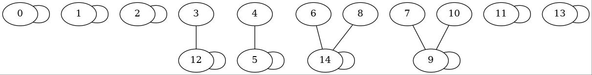
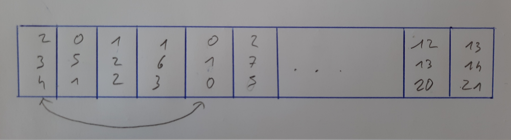
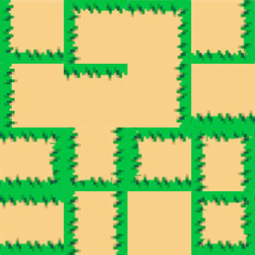

Chef d'oeuvre
Fonctionalités ajoutées :
Gestion de niveaux
Ajout de plusieurs planètes
Accélération des planètes

Liens vers le fichier du code C : Nyancat
Tas binaire

Partition
Représentation par une matrice d'adjacence :
Représentation avec une liste d'arêtes :
void Init_Aret(Elem *tab, int m)
{
int i, j;
int b = 0;
for (i = 0; i < m; i++)
{
for (j = 0; j < i; j++)
{
if (rand() / (float)__INT_MAX__ < 0.09)
{
tab[b].str = i;
tab[b].fin = j;
tab[b].val = 1;
b++;
}
}
}
}Ce qui donne avec graphviz :

Pour la suit on utilise les partions sur chaque case de la liste, on fusion simplement les partions des differents noeuds:

Labyrinthe

Partie théorique Labyrinthe
Création de toutes les arêtes entre les noeuds :
Les arêtes sont des triplets rangées dans un liste :
Ensuite il faut mélanger les arêtes :
Pseudo code :
Pour i de 0 à 20
echange_triplet(i,i+rand()%21
Fin


Avec l'algorithme des partitions, on selectionne certaines arêtes.
On selectione l'arête seulement si le noeud de depart et celui d'arrivé sont dans deux partitions différentes.
Dans ce cas on fusionne les deux partitions.
Celles-ci formeront le chemin du labyrinthe.
Pseudo code :
Pour i de 0 à 21
Si partition[nd_d] != partition[nd_a]
ajout(arête[i])
fusion(partition[nd_d],partition[nd_a]
FinSi
Fin
Liens vers le fichier du code C : Algorithme Kruskal
Pour la suite on recupère une grille génèrée avec l'algorithme de Kruskal, elle contient des nombres entre 0 et 15.
Pour faire un affichage en SDL on a cree un Asset de mur :

une fois cet Asset cree on c'est rendu compte d'un probleme :